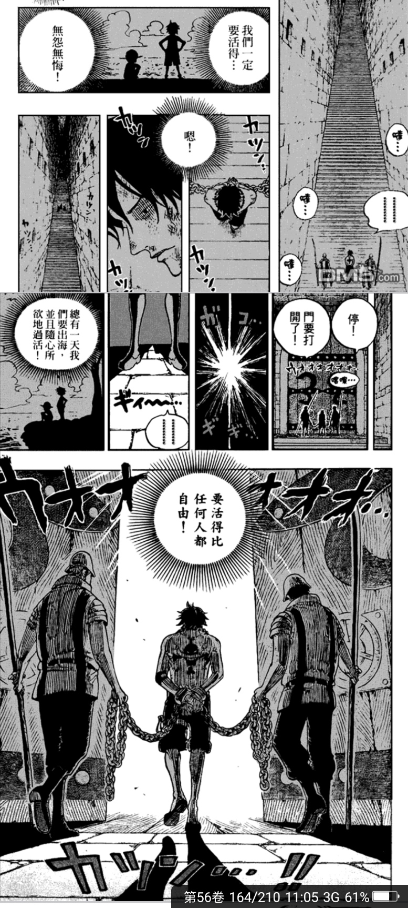
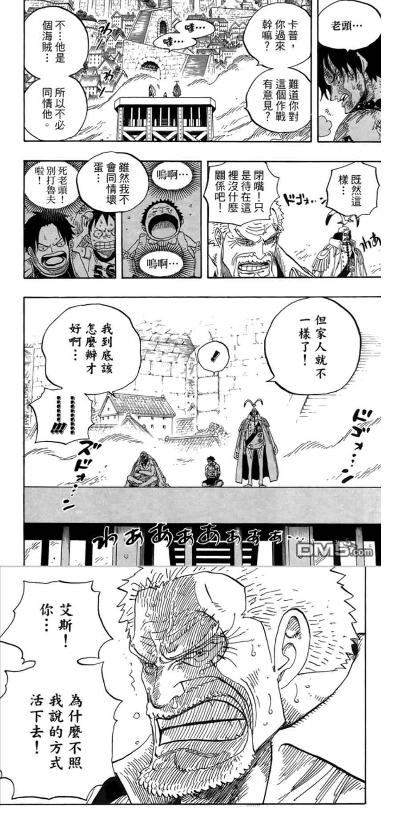

頂上戰爭篇
在這個篇章裡我最喜歡的就是親情和正義的描繪了
Irony of Fate
惡魔之子
艾斯眼神低落，緩慢地抬起腳步步沉重的踏上階梯，每踩一步就回想起一段回憶，跟兄弟們魯夫和薩波大鬧城鎮，跟父親白鬍子遊歷四海，一直到剛才還在跟爺爺卡普耍嘴皮子， 每一個與他建立最親近關係的人都與他沒有血緣關係，都卻是最真切和寶貴的情誼。

羅傑的一句話開啟了大海賊時代，全世界為之瘋狂，紛紛奔向自由的大海，但也為世界造成了紛亂，帶來了苦難。
身為羅傑的兒子，艾斯從小開始並沒有受到外界關愛，伴他長大的只有不屑與對羅傑的憎恨。
「我真的該出生在這世界上嗎?」
飽受怒火焚燒的他雖然總是在武裝自己，獨力對抗本該不該出現在他這種孩子升身上的壓力，但夜裡他又何嘗不只是個孩子呢，埋怨親生父親，同時也對自己的存在認同感到疑惑，蒙上心門，只憑著本能獨立抵抗世界。
清楚記得當年帝一次見到魯夫，只覺得他是一個煩人又沒力量的跟屁蟲，甩不掉又總是令自己陷入危險，這對年幼的艾斯來說，無疑只把它當作麻煩。
然而時間一久，第一個化解艾斯心中的冰牆便是魯夫。同時沒有依靠的人，彼此互相依賴，這是他第一次感到有人需要他。
而後遇到的白鬍子更是填補了長久以來需要被人了解的渴望以及關懷。
頃刻間，抬頭，處刑台下成了一片火海，戰爭為他而起，遠處白鬍子的艦隊正與海軍交戰，魯夫大喊著:「你是我的哥哥!!」，邊奮力突破阻礙奔向處刑台，而卡普也應聲走來。
「海賊固然可恨，但，家人就不一樣了阿......」
「當初叫你們當海軍，為什麼不聽我的話......」
「當海兵不是想要限制你們，而是這樣就可以更容易保護你們了阿......」
「這可讓老夫如何是好阿......」
面對這種身分的矛盾，身為海軍中將的卡普默默垂下了頭，或許他正在心中嚴厲的譴責自己，但說什麼都為時已晚了。
親非親，卻遠勝於親
「我真的該出生在這世界上嗎?」
在最後的最後，生命卡隨著焰尾淡淡散去，熱情火紅的珠子分崩離析，一記本來描向魯夫的冥狗貫穿了艾斯的身體，霎時間，萬物彷彿被凍結般，所有人都停下了動作，屏氣凝神的一瞬，艾斯輕輕的在魯夫耳邊低語了幾句，
應聲倒下，他心中的疑問似乎在終結之時有了解答，一句道謝，非常小聲，卻如雷貫耳。
戰爭與正義
在戰爭開始後，尾田安排多佛朗明哥，這個處於黑白中間的角色說了一段超級令我印象深刻的話。
「嗯?你問我，我為什麼在笑?」
「因為我正站在時代的中央阿」
如果說海賊過分追求自由於是做出許多傷天害理的事，那海軍降下的也只不過是他們一廂情願的正義，在戰爭後期，已經失去了戰爭的意義了，不管是"邪惡"還"正義"都變得都只是追求自己伸展的舞台了，已經沒有人在管正確與否，
當失去原本的初衷，那不管哪一方都只剩混沌了。
不得不說這場戰爭尾田真的畫得很好，氣氛烘托得很到位，情緒和理念也好好的傳達出來了，看完是滿滿的感動阿。